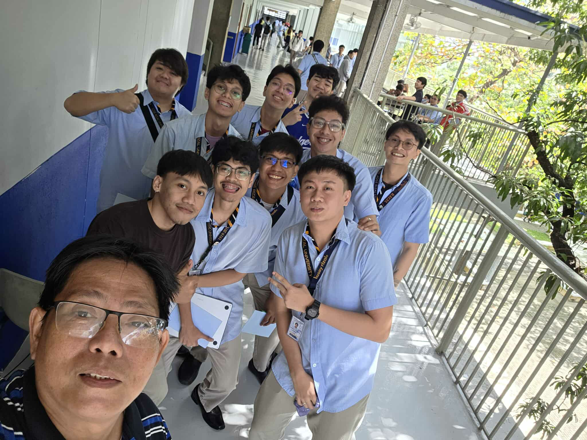

Final Term Reflection
- Throughout the final term, I gained meaningful hands-on experience in applying machine learning concepts to a real educational problem. Our group developed an Educational Question and Answering system using the BERT model, which helped me understand how theoretical lessons can be turned into practical solutions. I learned how challenging it is to gather enough quality data, especially when working on a specialized topic like Machine Learning concepts. With proper teamwork, we collected information from our module and used web scraping, ensuring our dataset was reliable and complete. Organizing the dataset into a structured format made our workflow easier and helped us smoothly move to implementation. This process allowed me to see how planning, coordination, and data preparation are essential steps before doing any machine learning work.
- As we started building our model, I learned the importance of tokenization, answer alignment, and selecting the right pre-trained BERT model for Question and Answering. Implementing helper functions such as identifying the start and end indices of answers taught me how critical accurate labeling is for model training. I also realized the importance of choosing the right computational resources, such as using GPU for faster training and inference. Learning how to set seeds and use controlled experimental settings helped me understand the importance of reproducibility in machine learning. I also discovered how hyperparameter tuning, such as Grid Search and Random Search, can greatly affect model performance, especially when dealing with limited resources. Through this, I saw how systematic testing and careful configuration are needed to build a stable and reliable Q&A system.
- Completing the final implementation was the most challenging but rewarding part of this project. Fine-tuning the BERT-base-uncased model using our annotated dataset helped me understand how a general model becomes specialized for a specific task. I learned how to improve performance through optimized hyperparameters and how techniques like sliding window tokenization and semantic similarity improve answer detection. Evaluating the model using metrics such as F1 Score, Exact Match, and inference time showed me how important proper assessment is before deploying any system. These evaluations helped me recognize whether our model was accurate, fast, and reliable enough for educational use. Reflecting on all of this, I realized that the skills I learned model tuning, evaluation, teamwork, and problem-solving are essential for my future career in IT, especially if I pursue paths like Data Scientist, Machine Learning Engineer, or Data Engineer.
Acknowledgement
- I would like to express my deepest gratitude to my advisor, Dr. Rodolfo Raga Jr. Your expertise in Machine Learning, especially in Natural Language Processing and Deep Learning, has been instrumental in shaping not only my academic growth but also my confidence in pursuing this field. Your patience, dedication, and passion for teaching inspired me to push beyond my limits and appreciate the beauty and complexity of data.
- Thank you, Sir, for always believing in our potential and for guiding us with clarity and purpose. The way you simplify complex concepts and make them meaningful has left a lasting impact on how I understand and approach machine learning. Someday, when I become a Data Analyst or Data Engineer, I hope to reach out to you again not just to show you how far I’ve come, but to tell you how deeply grateful I am. I will always be proud to say that my foundation in this field was built under your mentorship. Your guidance has shaped my path more than you know, and for that, I will always carry with me a sense of gratitude and honor.